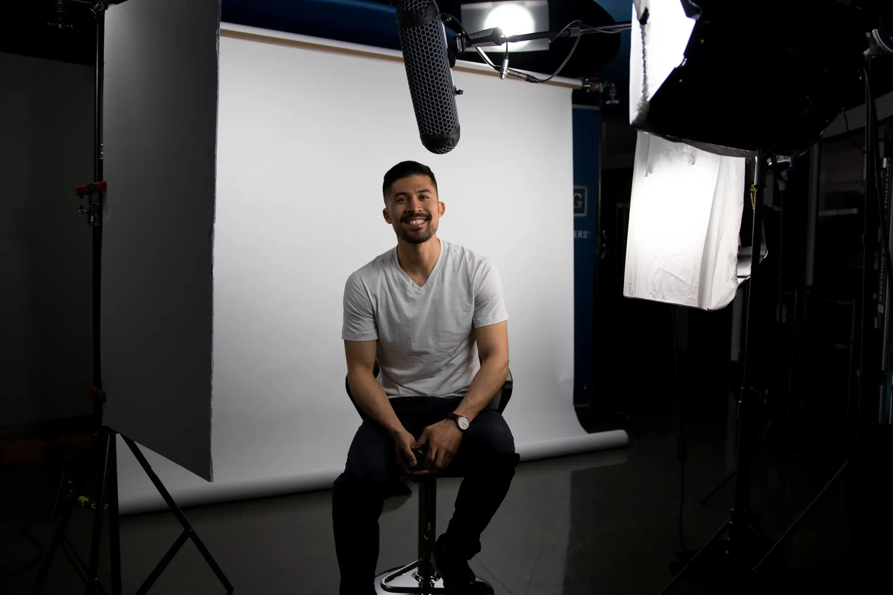

Matthew Tavares / Portfolio
Photography& cinematography
01 Selected work
Stills, unstaged



02 About
I picked up a camera because stock images never told the real story.
I’m Matthew Tavares. I was always starved for authentic, impactful images and video to help tell a story, so I started making them myself, and I’ve never looked back.
That passion followed me outdoors and into the gym: hiking, camping, rucking and CrossFit. Today I shoot photography and video for organizations that want content that feels real.
- APhotographyEvents, sport, outdoors and portraits.
- BCinematographyInterviews, documentary shorts and stories for your channels.
03 Contact
Let’s make
something real.
matt@mt1.co
Have a shoot, a story or a film in mind? Send a note and I’ll get back to you.